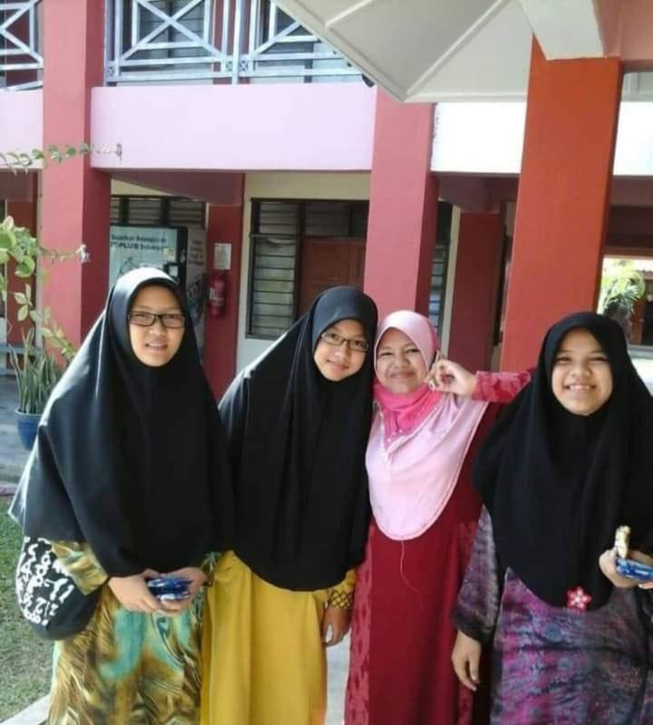

During my primary school, I was really active in every curricular activites. I had involve mainly in Art and Culture Activites (Kesenian dan Kebudayaan). I involve in activites such as:
Traditional Dancing
Cheerleader
Recorder and Assembly
Theatre (JKKN)
Unfortunately, I am not able to show you how active I was during my primary school because I do not have any captures to save the memory. You know, we do not have smartphone or smart gadget at that time. Only camera can be used to capture the memory. I think my teacher might save all of them, and I don't have any of them. Lol AHAHAHA.. Its okay, the most important thing is I'm still cherish the moments that I have during my primary school in my heart and my mind.
After I end my childhood phase, I got the offer from my application to further my study in MRSM Besut, Terengganu. It was the first time I live further away from my family. It is quiet challenging and need a lot of strength and patience to handle yourself with zero knowledge and experience at different place. In that boarding school, I learnt to be independent and matured in managing myself and making any decision. A lot of beautiful and bad memory happen there. All of them give me a great experience and lesson in my life to be a person like what I am right now. Its all started at that starting point and I am grateful for that opportunity.
In my upper secondary years, I was accepted to enter MRSM Bitara after I got flying colours in my PT3 result. I got the chance to gather with excellent student from different school and MRSM. I am grateful too for that opportunity. At there, all students are struggling to be success and compete between each other in healthy way. Our main focus is on academic. All of us have our own goals to be success in our future career. Many alumni graduated from that school and become a very successful people nowadays. They give us inspiration and motivation to be like them in the future. For your information, MRSM PC is the oldest MRSM because it was the first MRSM built as a boarding school long time ago. There are a lot of great memory and experience too during my time at MRSM PC. I think it was the best moment in my life as a student and teenager. i got a lot of memory there, and there are a lot of pictures I and my friends had capture to save our memory together.
After ending my SPM in MRSM PC, I was offered to furher my study in foundation in UiTM Dengkil. It was the far place I had live further from my family which in Kelantan. Its a different place and culture I guess. Its a really different phase that I exprienced in my study journey. I think all people experienced the same. University life is the most enjoyable yet challenging too. If you did not manage to control yourself, you will be lost and you might destruct your attitude, academic and anything. You will faced a lot of influence during that time, you need to choose which one for you to follow and be influenced by that. You faced a lot of different people from any school, different backgound, different attitude ant etc. You need to have a really strong stand and strong heart, so that you will not easily influenced by bad thing. It was a starting point for my adult phase journey.
Alhamdulillah I had faced that phase in a great way. I choose to be influenced by positive vibes and atmosphere, with very good and supportive friends. I also actively involve in art and culture activites in UiTM Dengkil. I joined the Performing Arts, Creative Writing, and Critque CLub to further increase my knowledge and experienced in art and culture activities. Other than that, I am also actively involve in sport which is volleyball. It was my games during my leaisure time and I also joined the tournament in the Karnival Sukan Pusat Asasi (KASPA). Overall, foundation year is the thrilling experienced as you do not know what you will faced in different atmosphere, and need to manage yourself wisely, make a right decision and be brave to faced whatever challenge are coming.
So, this is me now. I am currently further my studies in Islamic banking course year 2. I change my pathways of study from science stream to banking. And I start my study with Online Distance Learning phase, simce we faced the pandemic of Covid 19 during my first year of degree. It is not fun to experienced degree life at home. It is boring and there is no much thing I can do. We only faced the lappy and phone all the time during the class. You know, we never experienced this condition before this. So, I am also did not know how to manage myself as a student at home. I was growing in boarding school and far from my place, so it take time for me to be comfortable and get the mood to study at home. All program that i joined also through online. So, it is not best and not give a great experienced at all. We can just only joined webinar, talk and what so on thorugh the online. No physical activies can be done at that time.
But recently, in the early of my fourth semester, I got the opportunity to join the Kursus Pengurusan organisasi in UiTM Machang as the Vice President of Taekwondo Club. I was really happy and excited to joined the KPO program since it is the first physical programm done in my university after the long pandemic. The activity was done after the pandemic is turn to endemic phase. I also got the opportunity to be selected as the volleyball player for my faculty during the Sukan Antara Fakulti (SAF) at UiTM Cawangan Kelantan. That was the best moment of my degree life for this past 4 semester. I hope there will be more chances for me to gain the experiences during this degree life since I only have one semester left for my study and the last sem is for my internship. Wish me the best of luck!